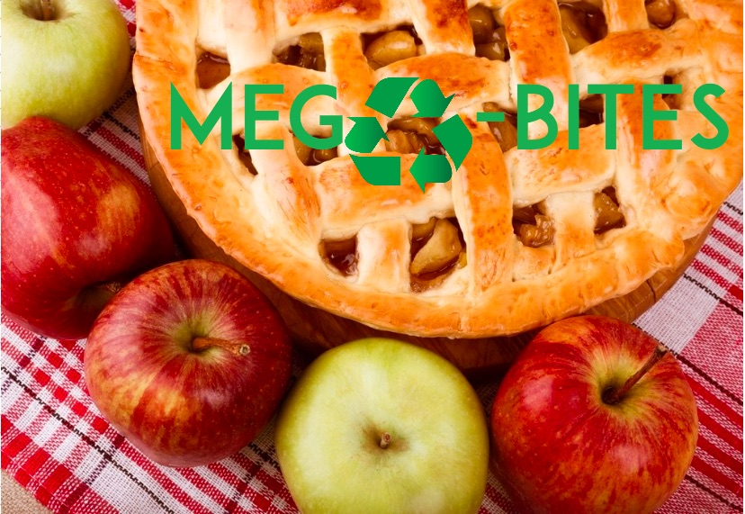

Turning less food into rubbish can also make a real difference to the world around us – and that’s something we can all get on board with!
Read on to find out more about why and how to be leaner and greener, and what you could do with the money you’d save!